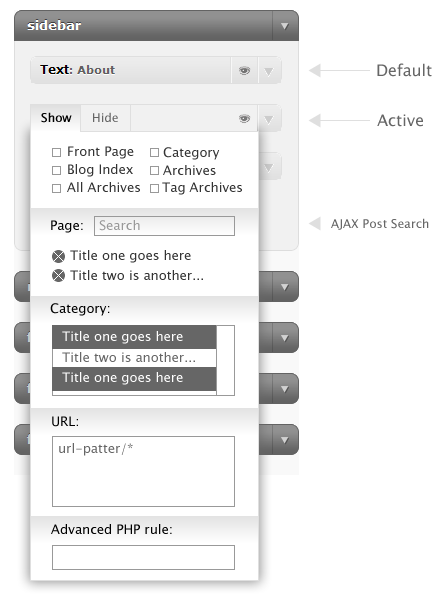
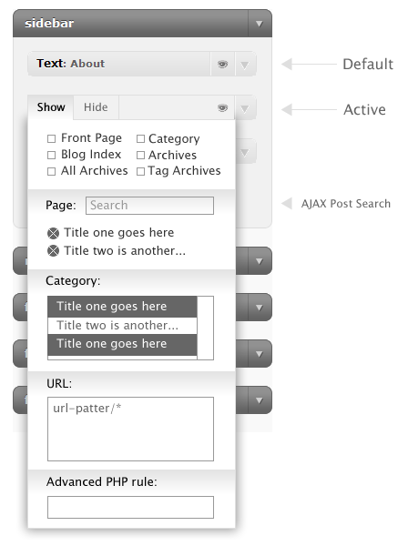

Here is the new user interface that I have in mind for the next version of the Widget Context plugin. Feedback and suggestions from everyone currently using the plugin is much appreciated.

Here is the new user interface that I have in mind for the next version of the Widget Context plugin. Feedback and suggestions from everyone currently using the plugin is much appreciated.

Wow, that looks very slick. The current version functions well but that is pretty sweet. I love that there is going to be an Advanced PHP rule too.
Looks very good. Just been struggeling with the widget logic plugin (no php knowledge) – managed to get it to work though. But wish i’d seen this plugin first.
New version looks great! Very useful. Maybe a search for category as well?
Post a comment here when it’s been updated so i can come back and have a look :-)
Looking good! I use your plugin on a number of sites and the only not-so-great things to mention is that:
1) When editing widgets, Widget Context is always expanded and looks messy/takes up too much screen real estate
2) You can’t choose single posts in certain categories where you want a widget to be shown (or not)
This seems to fix both. When do you think the update will be available?
Thanks a bunch for a great plugin! I’ll donate as soon as I see the next update! ;-) Lots of value in this plugin, no doubt.
Lasse
Have you implemented this at all? I’d really like you to release this (or at least a beta version). The current context menu is gianormous, I wish I could have it hidden by default if I’m just editing widget settings.
Looks great though! Intuitive design.
any news about this update? I have much more specific rules in 99% of cases (e.g. on this custom post type to depth x except y), so i can’t live without advanced php rules, so without widget logic (p.s.: it would be great, if that advanced php rules would be imported from widget logic settings, so i would not have to retype it when migrate).
Thanks for your suggestions, Tomas! I can’t really promise when the next update will be, but I’ll try to add that “advanced rules” feature, as well as easier post and custom post targeting.
I have dreamed this night about your plugin ;-) and i got few more possible advancements
1. select box with other widgets (in both show & hide) – so you can set “show this box when that selected box is (is not) visible)” – this could really revolucionalize the usage as you could set all settings just for one widget and the others will just check if that widget is shown or not.
2. possibility to fill both Show/Hide and check if it should be first – “show in all posts and NOT on post x” vs. “do not show on posts except post x”
3. possibility to change ID and class of the box DIV (PLEASE, if possible, it would be my most loved plugin ;) – in that case it could be possible to set other settings, which are normaly common for all widgets (prepending tag, clossing tag …).
anyway i’m glad to see you are still developing it, i worried that it was abandonned.
Thanks for your suggestions, Tomas!
Can you add the ability to display widgets on posts that have particular taxonomies?
+1 custom taxonomy support